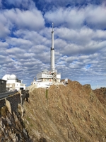

Sur ce site internet nous allons vous présenter notre Voyage d'intégration avec la classe des E² au Pic Du Midi de Bigorre.
Nous vous raconterons nos journées une à une avec de petites anecdotes.
Ce voyage ce déroule en trois jours, cliquez sur les liens à gauche pour vous y rendre. 